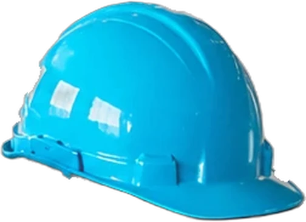
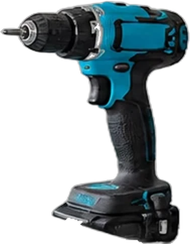
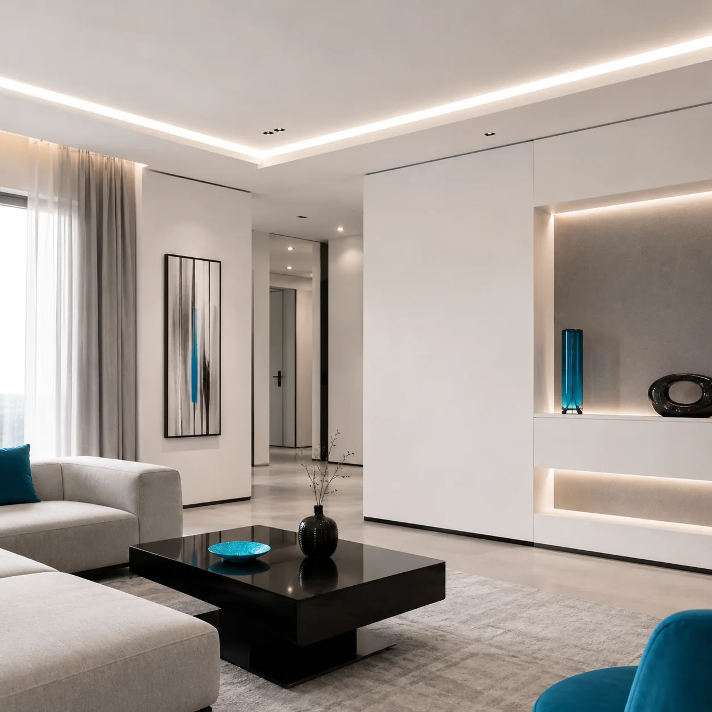
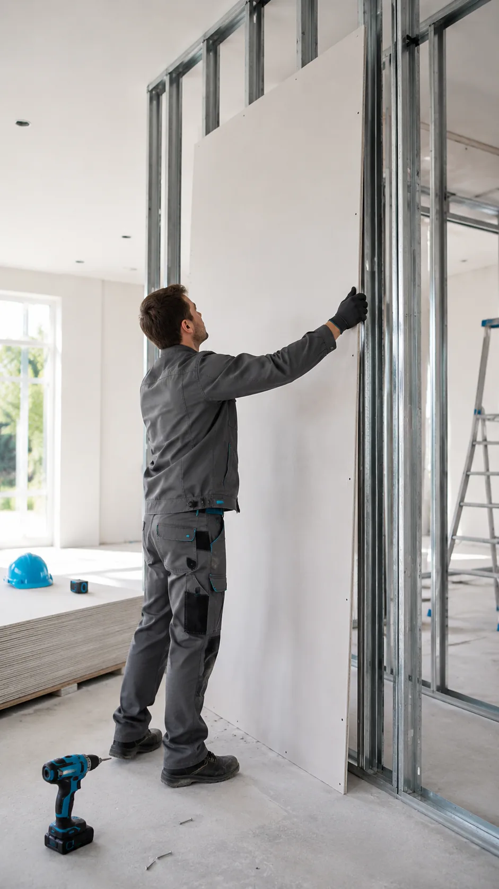
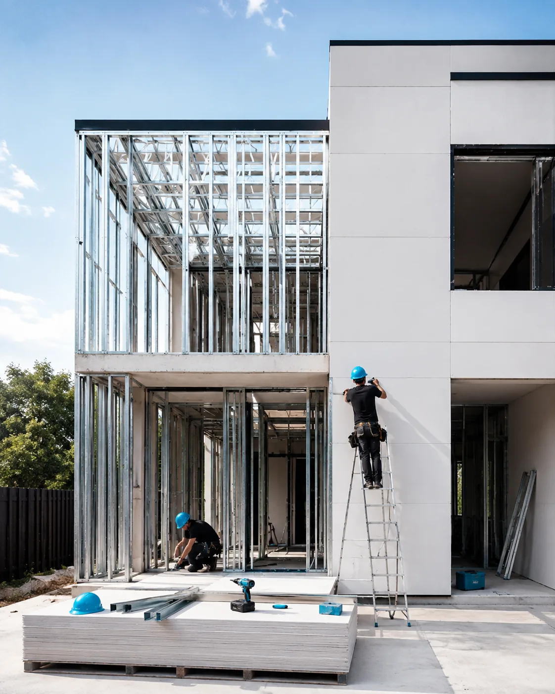
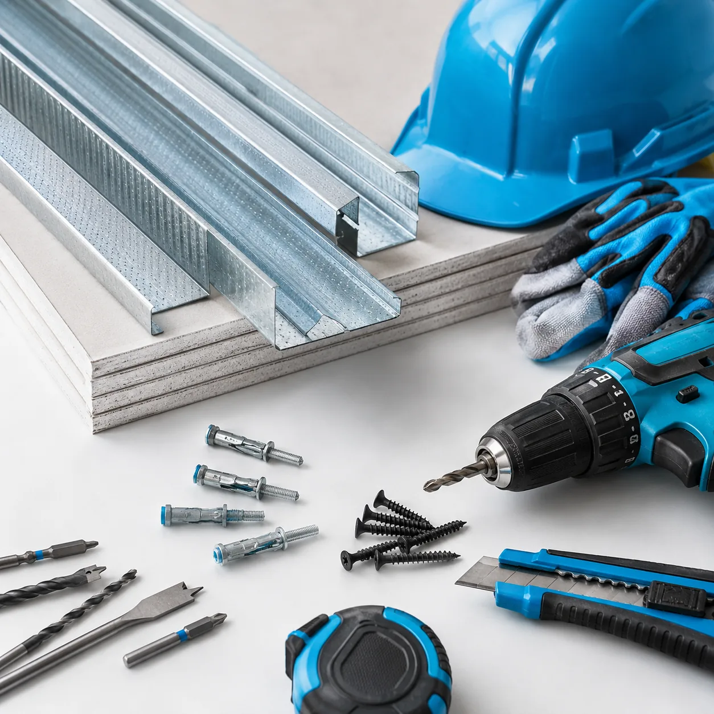
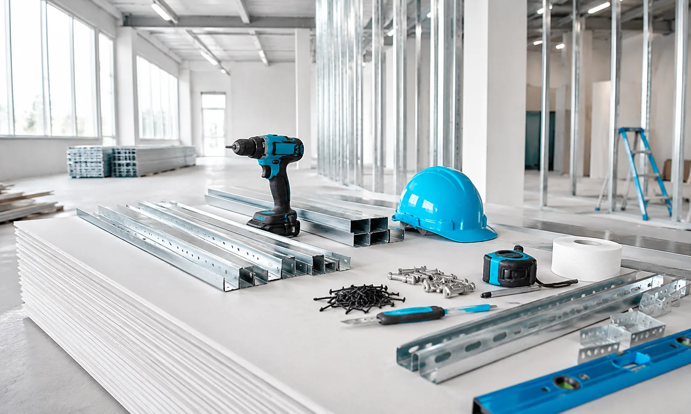

Construcción en seco · Steel frame
Paredes nuevas sin romper la casa.
Ampliaciones, tabiques y cielorrasos en Durlock y steel frame. Se hace en días, no en meses: sin escombros, sin humedad y con la casa habitada.
- 0años en la Costa
- 0obras entregadas
- 0días sin poder usar tu casa

01 — Servicios
Todo lo que se resuelve en seco
Trabajamos con perfilería galvanizada y placa de yeso. Cada obra se calcula, se modula y se cierra: sin sorpresas a mitad de camino.
-
01
Tabiques y divisiones
Dividí un ambiente sin tocar el piso ni la estructura. Con aislación adentro y terminación lista para pintar.
-
02
Cielorrasos
Suspendidos o aplicados, con junta tomada invisible. Ideales para esconder instalaciones y sumar luz indirecta.
-
03
Ampliaciones en steel frame
Un cuarto, un altillo o una oficina nueva. Estructura de acero galvanizado, liviana y calculada.
-
04
Placas especiales
Verde para baños y cocinas, rosa para sectores que necesitan resistencia al fuego. Se elige según el ambiente.
-
05
Aislación térmica y acústica
Lana mineral dentro del tabique. Se nota en la factura de luz y en el ruido que deja de pasar.
-
06
Masillado y terminación
Tres manos de masilla y lijado fino. Te la entregamos lista para el pintor, sin juntas a la vista.


-
01
Se levanta la estructura
Soleras arriba y abajo, montantes de acero galvanizado cada 40 cm. Todo aplomado y nivelado: si esto sale derecho, lo demás sale derecho.
-
02
La placa la tapa
Atornillamos la placa de yeso sobre los montantes. Desde acá ya no vas a volver a ver la estructura — y ese es el punto.
-
03
Se toman las juntas
Cinta y tres manos de masilla sobre cada unión, con lijado entre mano y mano. La pared deja de tener costuras.
-
04
Queda lista para pintar
Superficie continua, lisa y limpia. Nadie que entre a ese ambiente va a poder decirte por dónde pasaba un montante.

02 — Por qué en seco
La obra tradicional te saca de tu casa. Esta no.
- Sin escombrosNo hay demolición ni volquete en la vereda. Lo que sobra entra en una bolsa.
- Sin secadoNo hay que esperar que fragüe nada. Se termina y se pinta.
- Más livianoUn tabique en seco pesa una fracción de uno de ladrillo: podés ampliar arriba sin reforzar abajo.
- Aislación adentroEl espesor que en ladrillo es macizo, acá va lleno de lana mineral.
03 — Obras
Trabajos terminados
Cada obra arranca con un relevamiento en tu casa y termina con la superficie lista para pintar.



04 — Clientes
Lo que dicen de la obra
-
“Dividimos el living para hacer un cuarto más y en cuatro días estaba pintado. Seguimos viviendo en la casa toda la obra.”
-
“Me explicaron por qué convenía placa verde en el baño antes de que yo preguntara. Se nota que saben lo que hacen.”
-
“El cielorraso quedó impecable, sin una junta a la vista. Y dejaron la casa más limpia de lo que la encontraron.”
05 — Preguntas
Lo que nos preguntan siempre
Si tenés una duda que no está acá, escribinos y te la sacamos por WhatsApp.
¿Una pared de Durlock aguanta lo mismo que una de ladrillo?
Para lo que se le pide adentro de una casa, sí. Los montantes de acero soportan la carga y en los puntos donde va a colgarse peso (un televisor, alacenas, un inodoro suspendido) dejamos refuerzos de madera o chapa antes de cerrar la pared. Por eso conviene decirnos de antemano qué vas a colgar y dónde.
¿Cuánto tarda una ampliación?
Un tabique simple se hace en uno o dos días. Un cuarto completo en steel frame, entre dos y cuatro semanas según tamaño e instalaciones. Te damos el plazo por escrito con el presupuesto y no se mueve salvo que vos cambies algo.
¿Puedo seguir viviendo en la casa durante la obra?
Sí, y es la razón principal por la que la gente elige seco. No hay demolición, no hay agua, no hay que esperar que seque nada. Trabajamos por sector, tapamos con film lo que no se toca y limpiamos al terminar cada jornada.
¿Se puede colgar un televisor o una biblioteca?
Sí. Sobre el refuerzo va directo; donde no hay refuerzo se usan fijaciones específicas para placa, que soportan bastante más de lo que la gente cree. Lo que no recomendamos es colgar peso con tarugos comunes de mampostería.
¿Trabajan fuera de Pinamar?
Cubrimos Pinamar, Valeria del Mar, Cariló, Ostende y Madariaga sin costo de traslado. Fuera de esa zona lo vemos: contanos dónde es y te decimos si llegamos.
Presupuesto sin cargo
Contanos qué querés hacer y vamos a verlo
Mandanos un mensaje con el ambiente y, si tenés, una foto. Coordinamos una visita, medimos y te pasamos el presupuesto cerrado.
Pedir presupuesto por WhatsApp- WhatsApp +54 2255 41-1008
- Email hola@guscorp.com.ar
-
Zona
Pinamar · Valeria del Mar · Cariló · Ostende · Madariaga
-
Horarios
Lunes a sábado · 8 a 18 h